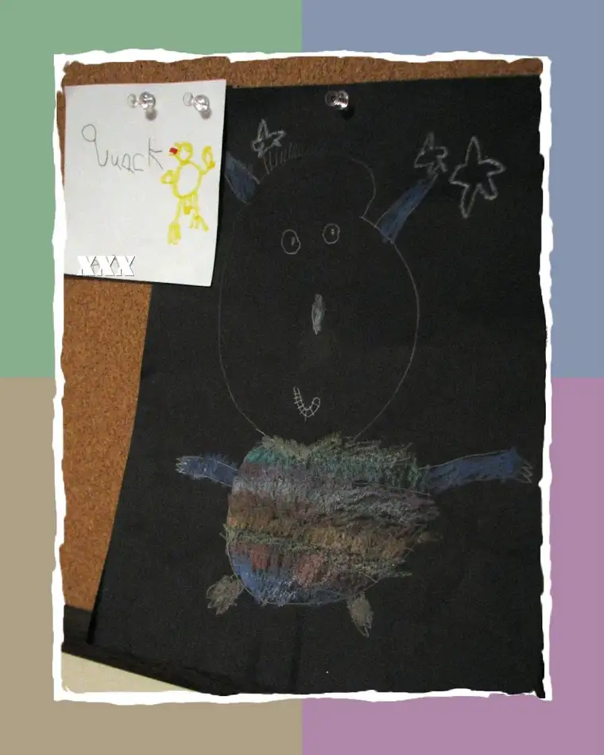

Who can forget Where the Wild Things Are by Maurice Sendak? Few in my generation of readers (and I suspect few since) escaped its illustrative impact. Two summers ago, at the recommendation of a writer-illustrator friend, I read a book detailing exchanges between the young Sendak and his earliest editor, Ursula Nordstrom. The book, Dear Genius, comprises personal letters between Nordstrom and many of her writers, and I suspect others interested in children’s literature and how it comes to be will find it a fascinating read. But all that’s an aside to the joy I received recently when my almost-six-year-old presented me with his rendition of “Wild Thing.” This brought back vivid memories of a children’s book that captivated me as a child, even while rousing my already vivid imagination into creating a few more nightmares. Next to “Wild Thing” is a simpler sketch of Child #4’s rendition of a duck. My father taught me to make a duck out of the letter 8 as a child, I taught my son, and here is the result. What comes around goes around, sometimes in the sweetest of ways.

http://moms.inforum.com/
{kind=link}
Also, I hope you will check out this link. It’s a new way for us parents to connect with one another, ask questions, offer advice, find out about new parenting techniques, recipes and other assorted relevant topics. I’ve joined the breastfeeding group, mainly to offer any insight I might have for younger mothers following my twelve years of nursing my five babes. I also put in a request to start up a “mothers who write” group, which I think could be fun for those of us who attempt the writing life while raising our families. Even if it’s just an entry in a diary every so often, writing can be a very cathartic, healthy way to manuever through the trials and joys of parenting. There are many group topics that are available and/or possible. This kind of thing makes me envious (in a good way) that the reality of blogging and online forums such as this were not around when I was just beginning my venture in parenting. At that time, just 13 years ago, we didn’t even have email — imagine it! I was living miles away from home and tackling the parenting thing without the support of extended family. This forum would have been invaluable to me then. And even though I’m jumping on board later in the journey, there’s still lots for me to learn, and perhaps a little for me to share.